Aula 8 (2019-05-02)
Chaves
O conceito básico para estabelecer relações entre linhas de tabelas de um banco de dados relacional é o da chave. Em um banco de dados relacional, há ao menos três tipos de chaves a considerar:
- Chave primária;
- Chave estrangeira;
- Chave alternativa.
Chave primária
Uma chave primária é uma coluna ou uma combinação de colunas cujos valores distinguem uma linha das demais dentro de uma tabela.
Empregado:
| CodigoEmp | Nome | CodigoDepto | CategoriaFuncional |
|---|---|---|---|
| E5 | Souza | D1 | C5 |
| E3 | Santos | D2 | C5 |
| E1 | Soares | D1 | C2 |
| E2 | Silva | D1 | - |
-
Chave primária → CodigoEmp → chave primária simples;
-
Apenas o CodigoEmp serve para identificar um empregado.
Dependente:
| CodigoEmp | NoDepen | Nome | Tipo | DataNasc |
|---|---|---|---|---|
| E1 | 01 | João | Filho | 2000-01-01 |
| E1 | 02 | Maria | Esposa | 1990-01-01 |
| E2 | 01 | Ana | Esposa | 1990-01-02 |
| E5 | 01 | Paula | Esposa | 1990-01-03 |
| E5 | 02 | José | Filho | 2000-01-01 |
-
Chave primária → CodigoEmp e NoDepen→ chave primária composta;
-
É necessário considerar ambos valores (CodigoEmp e NoDepen) para identificar uma linha na tabela, ou seja para identificar um dependente.
Chave estrangeira
Uma chave estrangeira é uma coluna ou uma combinação de colunas, cujos valores aparecem necessariamente na chave primária de uma tabela. A chave estrangeira é o mecanismo que permite a implementação de relacionamentos em um banco de dados relacional.
Departamento:
| CodigoDepto | NomeDepto |
|---|---|
| D1 | Compras |
| D2 | Engenharia |
| D3 | Vendas |
Empregado:
| CodigoEmp | Nome | CodigoDepto | CategoriaFuncional |
|---|---|---|---|
| E1 | Souza | D1 | - |
| E2 | Santos | D2 | C5 |
| E3 | Silva | D2 | C5 |
| E5 | Soares | D1 | C2 |
A coluna CodigoDepto da tabela Empregado é uma chave estrangeira em relação a chave primária da tabela Departamento.
-
Quando da inclusão de uma linha na tabela que contém a chave estrangeira: neste caso, deve ser garantido que o valor da chave estrangeira apareça na coluna da chave primária referenciada. No exemplo, isso significa que um novo empregado deve atuar em um departamento já existente no banco de dados;
-
Quando da alteração do valor da chave estrangeira: deve ser garantido que o novo valor de uma chave estrangeira apareça na coluna da chave primária referenciada;
-
Quando da exclusão de uma linha da tabela que contém a chave primária referenciada pela chave estrangeira: deve ser garantido que na coluna chave estrangeira não apareça o valor da chave primária que está sendo excluída. Exemplo: isso significa que um departamento não pode ser excluído, caso nele ainda existirem empregados.
A palavra “estrangeira” usada para denominar este tipo de chave pode ser enganosa. Ela pode levar a crer que a chave estrangeira sempre referencia uma chave primária de outra tabela. Entretanto, esta restrição não existe. Uma chave primária pode referenciar a chave primária da própria tabela.
Empregado:
| CodigoEmp | Nome | CodigoDepto | CodigoEmpGerente |
|---|---|---|---|
| E5 | Souza | D1 | - |
| E3 | Santos | D2 | E5 |
| E2 | Silva | D1 | E5 |
| E1 | Soares | D1 | E1 |
Chave alternativa
Em alguns casos, mais de uma coluna ou combinações de colunas podem servir para distinguir uma linha das demais. Uma das colunas (ou combinação de colunas) é escolhida como chave primária. As demais colunas ou combinações são denominadas chaves alternativas.
Empregado:
| CodigoEmp | Nome | CodigoDepto | CPF |
|---|---|---|---|
| E5 | Souza | D1 | 019.585.222-20 |
| E3 | Santos | D2 | 019.585.223-21 |
| E2 | Silva | D1 | 059.585.223-22 |
| E1 | Soares | D1 | 159.585.223-23 |
Quando especificamos que uma chave é primária, estamos especificando, além da unicidade de valores, também o fato de esta coluna ser usada nas chaves estrangeiras que referenciam a tabela em questão.
Exemplo
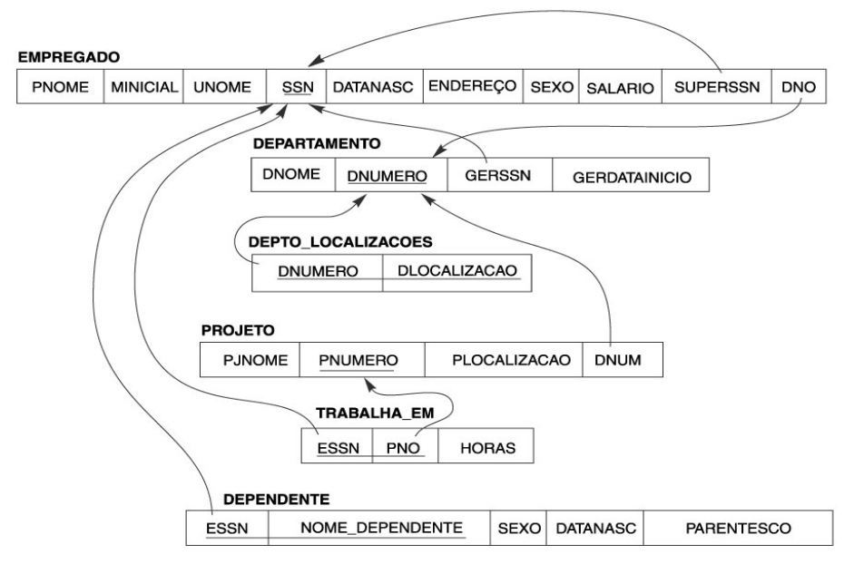
Mapeamento ER para o Modelo Relacional
Objetivo: projetar um esquema de um BD relacional tendo por base o esquema de um projeto conceitual.
Princípios:
-
Evitar junções;
-
Diminuir o número de chaves;
-
Evitar campos opcionais (geram "nulos").
Mapeamento
- Mapeamento dos Tipos Entidades Regulares (Fortes);
- Mapeamento dos Tipos Entidades Fracas;
- Mapeamento de Atributos Atômicos, Multivalorados e Compostos;
- Mapeamento dos Tipos Relacionamento Binários 1:1;
- Mapeamento dos Tipos Relacionamento Binário 1:N;
- Mapeamento dos Tipos Relacionamento Binário N:M;
- Mapeamento dos Tipos Relacionamento N-ário;
- Mapeamento da Especialização ou Generalização.
Tipos entidades fortes
Entidade E forte → Relação R com os atributos simples de E.
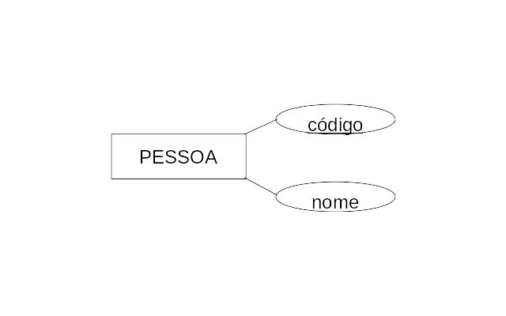
Esquema Relacional correspondente:
Pessoa(Codigo, Nome)
Tipos entidades fracas
-
Entidade W fraca → Relação R com os atributos simples de W;
-
Chave estrangeira → Chave primária da entidade forte;
-
Chave primária de R → Chave primária da entidade forte + chave parcial da entidade fraca.
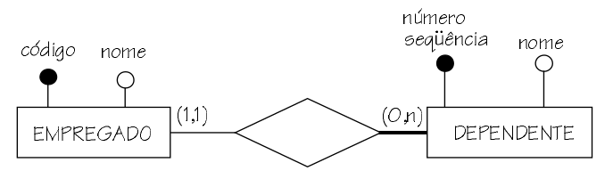
Esquema Relacional correspondente:
-
Pessoa(Codigo, Nome)
-
Dependente(CodigoEmp, NoSeq, Nome)
Atributo multivalorado
-
Para cada atributo multivalorado A da relação E criar uma relação R;
-
R deverá conter um atributo correspondente a A, mais a chave primária K – como chave estrangeira em R – da relação E;
-
Chave primária de R → A + K.
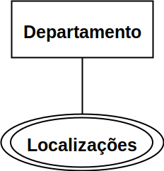
Esquema Relacional correspondente:
- Departamento(Dnum, Dnome)
- DeptoLocalizacoes(DNum, Dlocalização)
Atributo composto
- Atributo composto → Componentes simples.
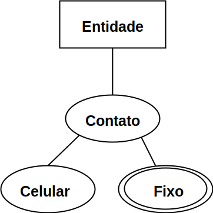
Entidade(NumEntidade)
Contato(NumContato, NEntidade, Celular)
Fixo(NContato, NFixo)
Relacionamentos Binários
-
Duas entidades: S e T;
-
Identificar as entidades S e T participantes no relacionamento R;
-
Há três alternativas básicas, sendo eles:
-
Tabela própria;
-
Adição de colunas;
-
Fusão de tabelas de entidades.
-
Tabela própria
-
O relacionamento R é implementado por meio de uma tabela com as seguintes colunas:
-
Colunas para os identificadores das entidades relacionadas;
-
Colunas correspondentes aos atributos de R.
-
-
A chave primária depende da cardinalidade do relacionamento R.
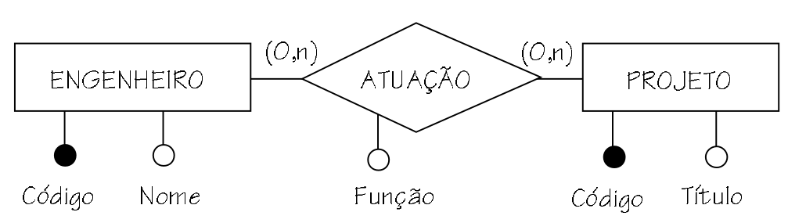
Esquema Relacional correspondente:
-
Engenheiro(CodEngenheiro, Nome)
-
Projeto(CodProjeto, Titulo)
-
Atuação(CodEngenheiro, CodProjeto, Função)
-
CodEngenheiro referencia Engenheiro
-
CodProjeto referencia Projeto
Adição de colunas
O relacionamento R é implementado por meio de adição de colunas em uma das tabelas correspondentes às entidades que participam de R.
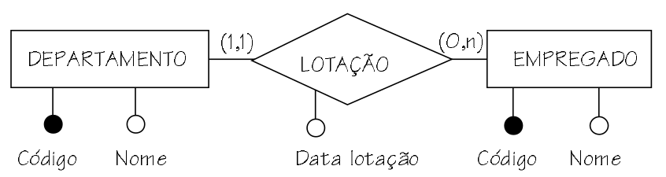
Esquema Relacional correspondente:
Departamento(CodDepto, Nome)
Empregado(CodEmp, Nome, CodDepto, DataLotação)
CodDepto referencia Departamento.
Fusão de tabelas de entidades
O relacionamento R é implementado por meio da fusão de tabelas referentes às entidades envolvidas em R.
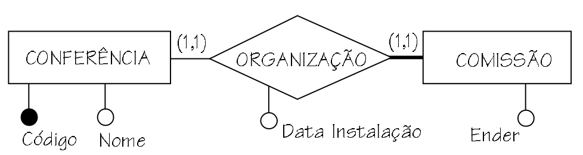
Esquema Relacional correspondente: Conferencia(CodConf, Nome, DataInstComOrg, EnderComOrg)
Relacionamento Binário 1:1
Possibilidades:
-
Ambas as entidades têm participação parcial (0..1 - 0..1);
-
Uma entidade tem participação total e a outra parcial (1..1 – 0..1);
-
Ambas as entidade tem participação total (1..1 - 1..1).
Ambas as entidades têm participação parcial
Alternativa PREFERIDA:
-
Adição de colunas:
-
Minimiza a necessidade de junções (+);
-
Existência de valores nulos (-).
-
Outra alternativa:
-
Tabela própria:
-
Elimina a existencia de valores nulos (+);
-
Duplicação de chaves (-).
-
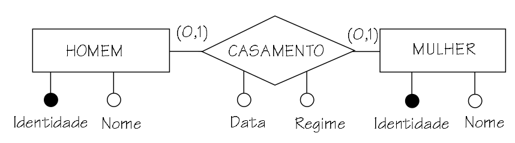
Esquema Relacional correspondente (adição de colunas):
-
Mulher(IdentM, Nome, IdentH, Data, Regime);
-
IdentH referencia Homem;
-
Homem(IdentH, Nome).
Esquema Relacional correspondente (tabela própria):
-
Mulher(IdentM, Nome);
-
Homem(IdentH, Nome);
-
Casamento(IdentM, IdentH, Data, Regime);
-
IdentH referencia Homem;
-
IdentM referencia Mulher.
Uma entidade tem participação total e a outra parcial
Alternativa PREFERIDA:
-
Fusão das tabelas correspondentes às duas entidades:
-
Minimiza a necessidade de junções (+);
-
Existência de valores nulos (-).
-
Outras alternativas:
-
Adição de colunas à tabela correspondente à entidade com cardinalidade mínima 0;
-
Tabela própria:
- Elimina a existencia de valores nulos (+);
- Duplicação de chaves (-).
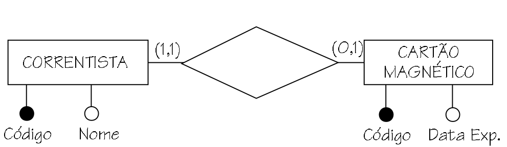
Esquema Relacional correspondente (fusão das tabelas):
- Correntista(CodCorrentista, Nome, CodCartao, DataExp)
Esquema Relacional correspondente (adição de colunas):
- Correntista(CodCorrentista, Nome);
- Cartão(CodCartao, DataExp, CodCorrentista)
- CodCorrentista referencia Correntista
Ambas as entidade tem participação total
Alternativa PREFERIDA:
- Fusão das tabelas correspondentes às duas entidades.
Outras alternativas:
- Adição de colunas;
- Tabela própria.
Esquema Relacional correspondente (fusão das tabelas):
Conferência(CodConf, Nome, DataInstComOrg, EnderComOrg)
Relacionamento Binários 1:N
Alternativa preferida
-
Participação total da entidade com cardinalidade máxima 1
-
1..1 - 0..N;
-
Adição de colunas.
-
Outra alternativa
-
Participação parcial da entidade com cardinalidade máxima 1
-
0..1 - 0..N;
-
Tabela própria.
-
-
Exige junção no acesso a dados (-);
-
Armazenamento e processamento duplicados de chave primária (-);
-
Eliminação de campos opcionais (+).
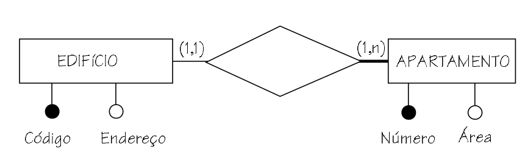
Esquema Relacional correspondente (adição de colunas):
- Edificio(CodEdificio, Endereço);
- Apartamento(CodEdificio, NumeroAp, AreaAp);
- CodEdificio referencia Edificio;
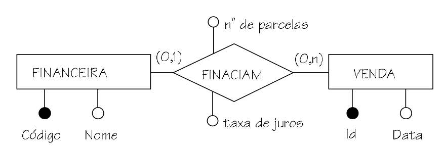
Esquema Relacional correspondente (adição de colunas):
- Financeira(CodFinanc, Nome);
- Venda(IdVenda, Data, CodFinanc, NoParc, TxJuros);
- CodFinanc referencia Financeira.
Esquema Relacional correspondente (tabela própria):
- Financeira(CodFinanc, Nome);
- Venda(IdVenda, Data);
- Financiamento(IdVenda, CodFinanc, NoParc, TxJuros);
- IdVenda referencia Venda;
- CodFinanc referencia Financeira.
Relacionamento Binários N:M
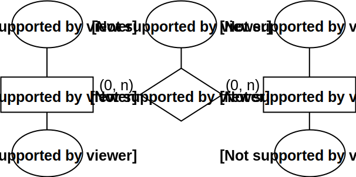
Esquema Relacional correspondente:
- Engenheiro(CodEngenheiro, Nome);
- Projeto(CodProjeto, Titulo);
- Atuação(CodEngenheiro, CodProjeto, Função);
- CodEngenheiro referencia Engenheiro;
- CodProjeto referencia Projeto.